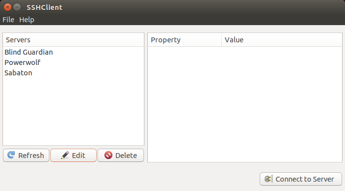
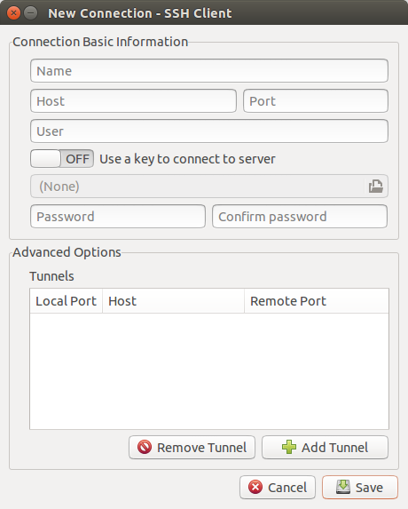
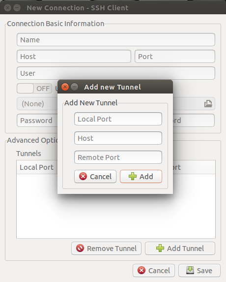
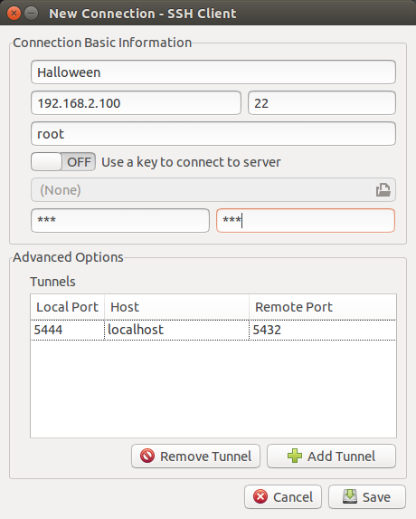
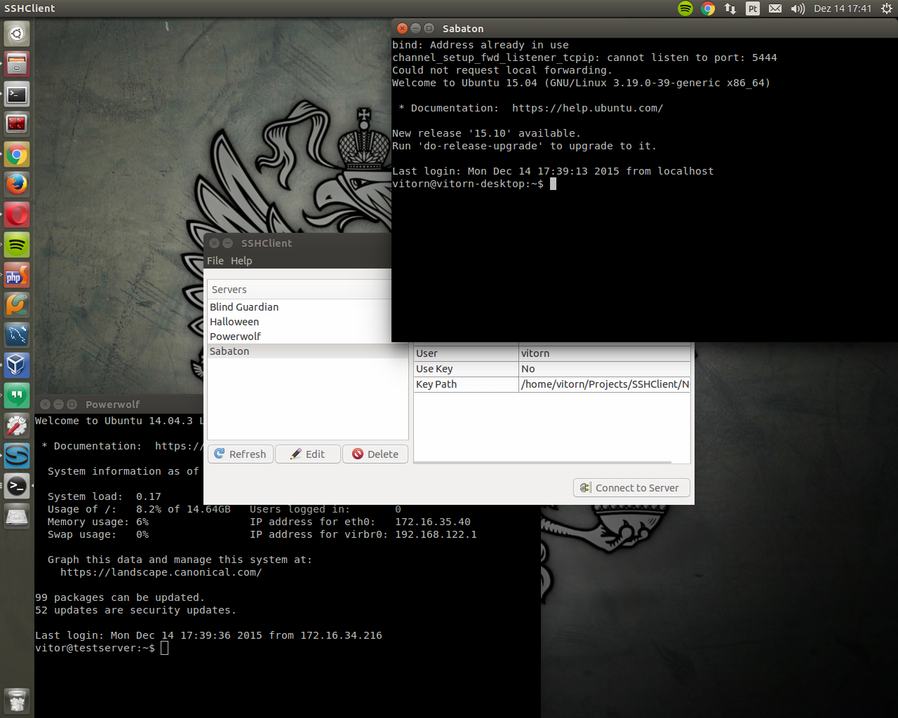
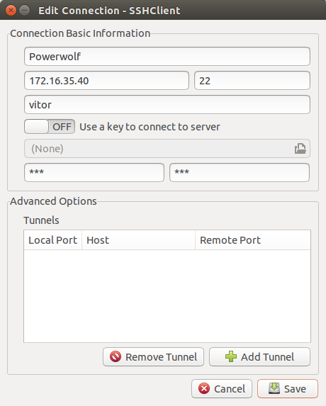
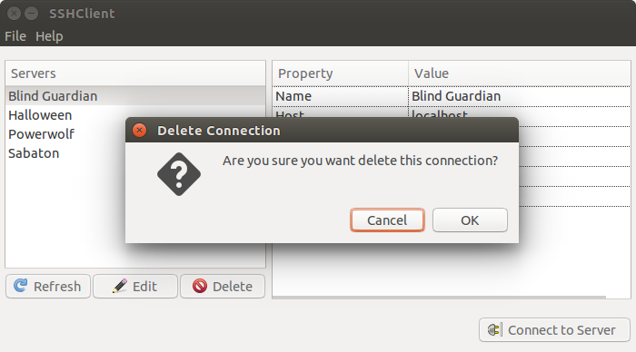
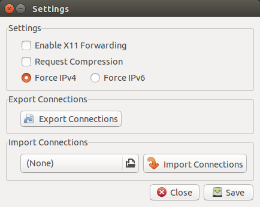
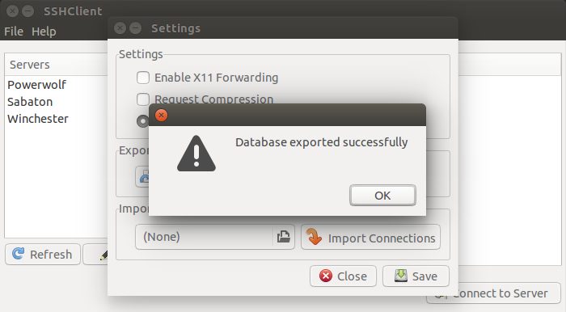
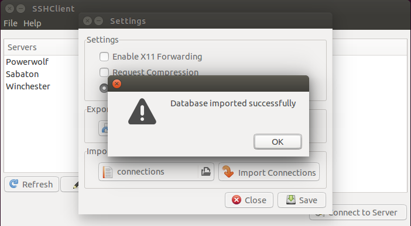

SSHClient
SSHClient is a software written in Python using GTK+. The main purpose of this project is to manage SSH connection via GUI on Linux environments.
With some click you are able to add a new SSH connection and open this connection via Shell. You also can add tunnels on this connection, so in connection time, the tunnels will be opened. And you can edit and delete this connection. So, all connection can be managed in one place, simple and fast
The Application
The application has a really simple interface, as you can see:

Basically, you just need add your connection, inserting your credentials, and clicking in the "Connect to Server", to open the SSH connection. You also can open multiple connections at same time.
Adding a new Connection
To add a new Connection, you need go to File > New Connection, or just press, Ctrl + N. When this window open, you can fill the form and create the connection:
Here, you will put the connection info, like host, port user and password, or key if you use it.
Adding Tunnels
In this Window, you also can add the tunnels to this connection, just clicking on "Add Tunnel".
 Opening a Connection
It's very simple to open a connection using SSHClient. You just need selected the connection on the left list, and click on "Connect to Server". So, a terminal will open connected into server. You can open multiple connection, how many you want!
Editing a connection
The main purpose of this application, is make the management of the SSH connection more easier, for example, change the auth method from password to key. So, to edit a connection, you just need select the connection on the left list and click on "Edit"
Deleting a Connection
To delete a connection is more simple than edit one. You just need select the connection on the left list and click on Delete. Simple like this!
Settings
SSHClient considers a few settings, like X11 Forward, Request Compression or Force IPv6. All this is configurable. You can access this configuration going to File > Settings or pressing Ctrl+S.
Exporting Connections
If you want use SSHClient in another computer, but you don't wanna create all server again. You can export all connections. It's a simple step, you just need click on "Export Connections" choose the file and save! Done! All connections exported, you can copy for your other computer and import!
Import Connections
Import the database of connections is basically the same thing then export, you need select the file and click in "Import Connections". Works like a charm! :D
About & Contribute
I'm Vitor Villar <vitor.luis98@gmail.com> and i had this idea to create this software to help, Devs, SysAdmins or someone else who uses SSH, to turn the management of all SSH connections more easier.
This project is smaller, but the intention is grow and make more useful. You can contribute foring this project and creating pull request, it may be arranging bugs or improving things, could be new feature or reviewing the code, turning the code better.
So, to help, you go to Github SSHClient page make a fork and play!